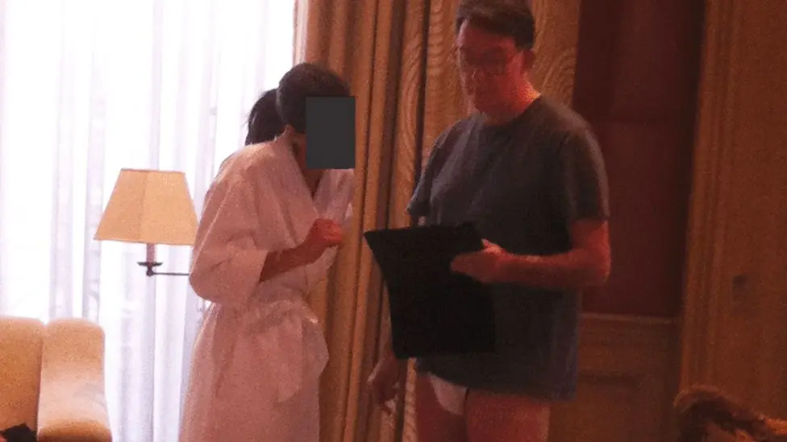
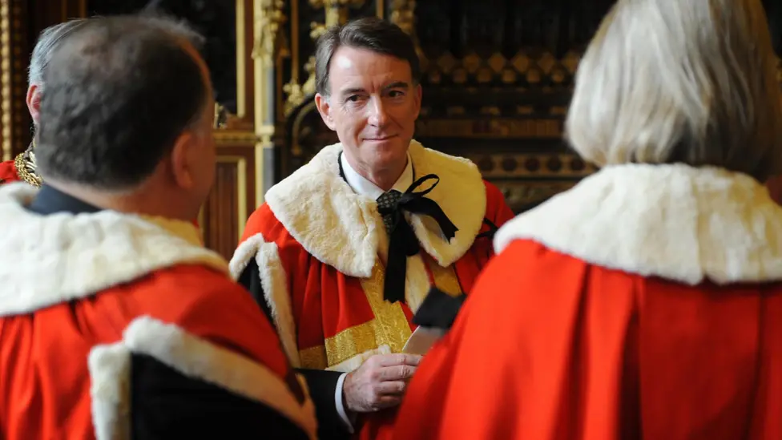
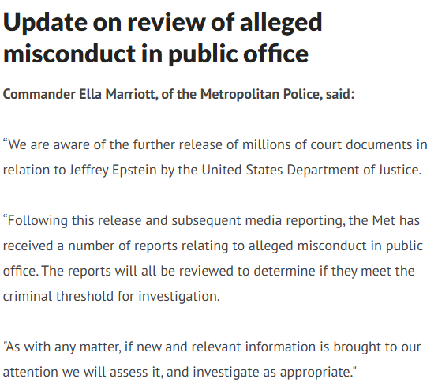

Politics - 2025-02-03: Peter Mandelson
London
Peter Mandelson Tax Evasion Bribery Insider Trading House of Lords Epstein GDPR
Peter Mandelson is in serious Trouble
Source#Peter Mandelson #Tax Evasion #Bribery #Insider Trading #House of Lords #Epstein #GDPR
Thumbnail

People Involved
| Name | G | Nationality | Role | Age | Date of Birth | Offence(s) | Sentence |
|---|---|---|---|---|---|---|---|
| Peter Mandelson | 🌐 | UK | Offender | 73.0 |
Peter Mandleson is in serious trouble. What charges could he be facing? The latest leak is that he received $75,000 from Epstein and cannot remember receiving it. Perhaps he's planning the Alzheimer's defence. Mandelson said he had no record or recollection of receiving the sums and did not know whether the documents were authentic. He said they need to be investigated by me. So investigate yourself, destroy the evidence in the process. Then we have the question has he paid tax on the income? I doubt it. So we can add tax evasion. Since the money went into his husband's account, so that's false accounting and fraud. He leaked emails to Epstein about the Greek bailout. That's sensitive insider information, so he's broken the law on insider trading. It's also a breach of GDPR, so he's got another offence he could be facing.

Then we have the odd image of him in his Marks and Spencer's y-fronts, no trousers, with a woman in a dressing gown? What are the discussing? Happy endings perhaps, option 4 on the menu.

Now since we have Andrew, formally known as Prince, there's huge pressure to do the same to Mandleson and return him to being a commoner. Now in general the Lords refuse to do that. There are lots of corrupt lords and some of those with convictions still taking the money as peers from tax payers. They have refused to deal with them. It will take real political pressure to strip him of being a Lord.

The Met police have made a statement that the latest batch of releases of 3 million Epstein documents will be investigated. Mandleson is one of those cases. He has resigned from the Labour party. Labour says it's to clear them. But in reality he's not going to make more cash out of his connections so their's no point in him paying Labour any more money. Like, subscribe and share if you find this information useful.